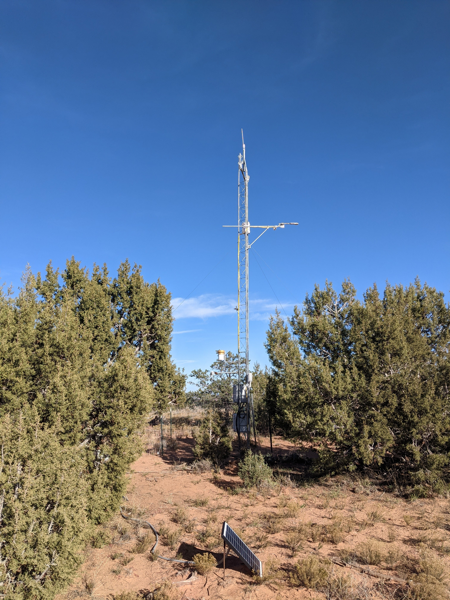
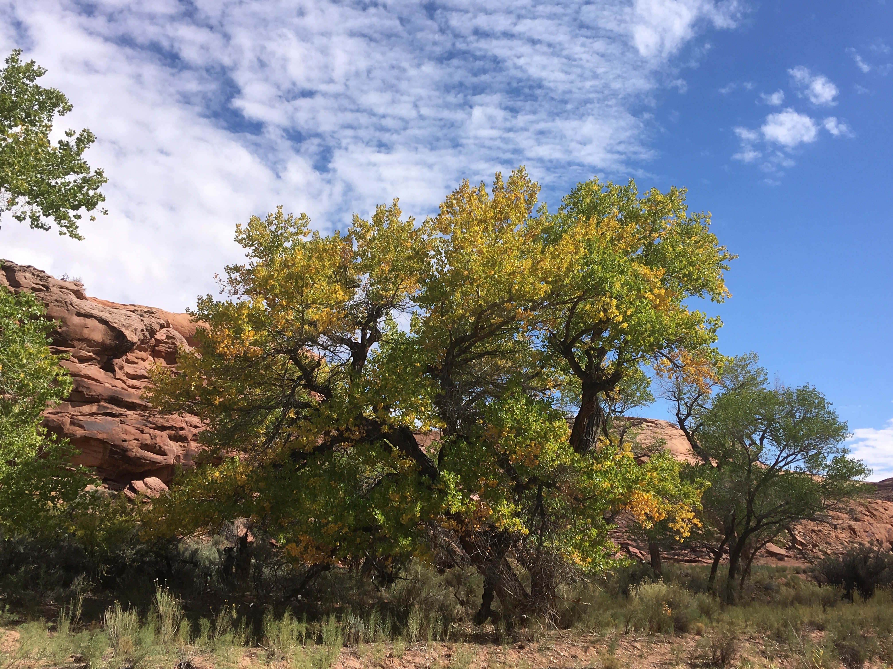
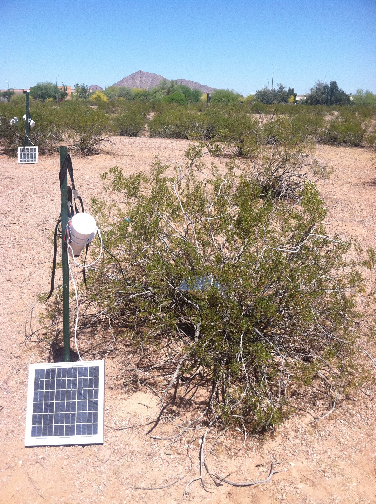
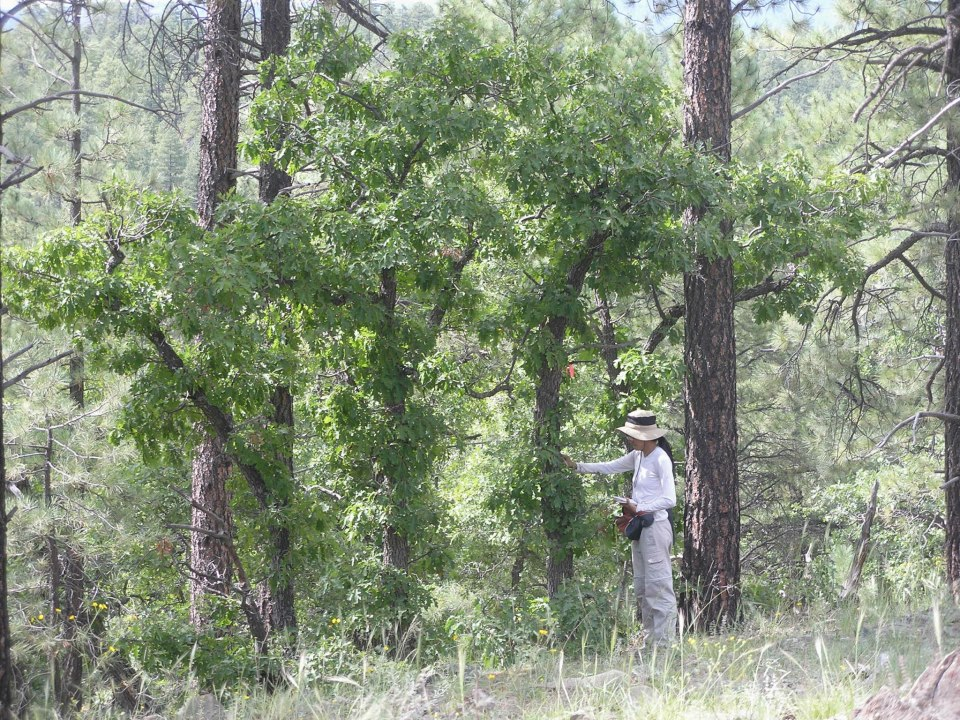

Research
Water use strategies from plants to fluxes
Vascular plants face an inevitable tradeoff between carbon gain and water loss. While plant taxa have long been classified by drought tolerance using multiple metrics, high-frequency instrumentation such as sap flux, stem psychrometry, and eddy covariance have allowed for response-based categorization of plant hydraulic regulation. I return to the pinyon-juniper woodlands to connect plant hydraulic regulation to ecosystem carbon and water fluxes.

Stomatal regulation in desert riparian trees

In dryland ecosystems, riparian trees are foundation species that provision key ecosystem services, including habitat for rare or endangered species. Thus, it is important to understand riparian tree responses to increasing atmospheric dryness and water limitation. Using sap flux time series, I modeled how the sensitivity of stomatal conductance to vapor pressure deficit changes sub-seasonally in (1) a common garden drought experiment and (2) nine naturally-occurring species across an elevation gradient.
Hydraulic behavior and NSC dynamics of Larrea tridentata
Plant water potential (\(\Psi\)) is an integrated measure of water status that underlies the critical plant functions of photosynthesis and transpiration. However, \(\Psi\) is typically measured too infrequently to capture its dependence on environmental variables such as soil moisture and atmospheric dryness, which can be highly dynamic. In the evergreen desert shrub Larrea tridentata, I used sub-daily measurements of \(\Psi\) coupled with frequent monitoring of non-structural carbohydrates to understand (1) the diurnal and seasonal responses of plant water status to environmental drivers and (2) the consequences for plant carbon dynamics.

Species coexistence under water limitation

Do co-existing plants partition water resources as suggested by species coexistence theory? In an early attempt to blend community ecology with plant ecophysiology, I compared stem and soil water isotopes along an elevation gradient in Northern Arizona, ranging from the upland Sonoran Desert to the spruce-fir forests in the San Francisco Peaks. By calculating niche overlap with output from a Bayesian mixture model, we found that plants in more arid ecosystems do indeed have less overlap between species pairs than plants in more mesic ecosystems.